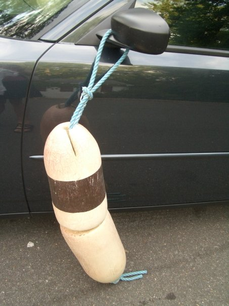
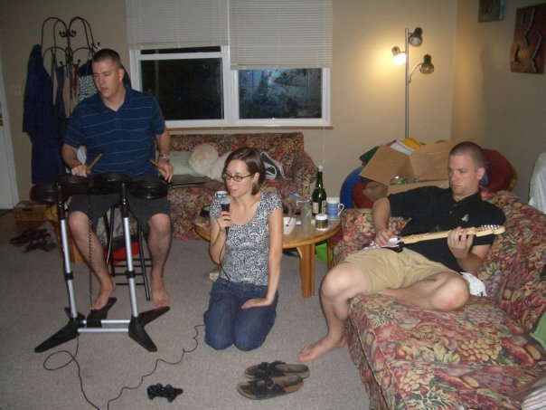
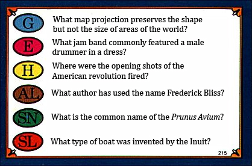
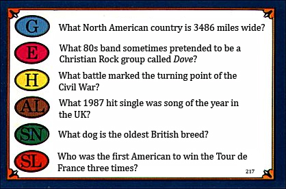
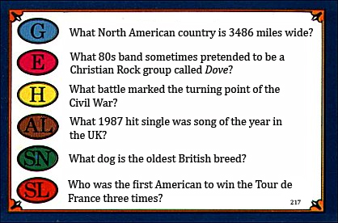
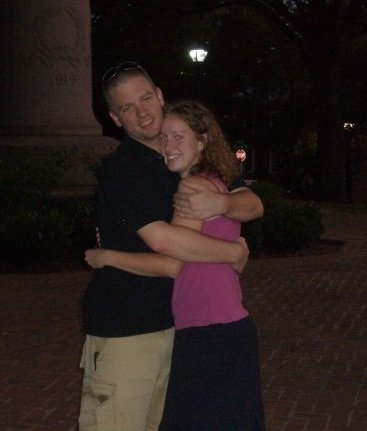

Sunday, August 24, 2008
Holy Smokes I Proposed!
After over five years of dating with no ring in sight, Jillian still hadn't issued me an ultimatum. I figured that means she's the girl for me.
So this last weekend I went down to Charlottesville to see Jillian. As an added bonus, David was also traveling through town on his way to New York. Although he is known for his marathon 18 hour solo non-stop drives from Florida to New York, he was glad to have an opportunity to stop and cause some mischief.
Since both David and I are known for patting ourselves on the back for our navigational skills (in fact, after meeting David, the first question he'll ask you is often, "Which way did you go to get here?"), we met at a rest stop on I-66. After a lengthy discussion as to why there were eight foot long concrete sidewalk strips in the parking lot, but no actual side walk, we got back on the road and drove to Charlottesville convoy style. Once there I gave him the nickel tour, which consisted of the trip to Lucky 7's to buy some food and drink. That night, Jillian and I even gave him a little gift for his "boat" - his brand new Dodge Charger
On Saturday, after continuing our Rock Band world tour, we ventured out to the downtown mall. At Java Java, Dave got an annoying phone call from Nick, who was in California working on this huge project. To complete our afternoon we watched some local coed hockey, hit up the Salvation army thrift store (Dave had a tv show theme party to attend later), and bugged Jillian's roommate Anna. Sadly, Anna couldn't come out to dinner with us, since her Mother was coming to town.
Around six we went out to Dinner at Sal's, which was delicious. Jillian got fried Ravioli, which definitely gave me second thoughts. After we'd finished eating, and were sitting around waiting for our check, Dave got a call from Nick again, this time needing some data off a spreadsheet on Dave's computer. So I gave Dave my keys (and I don't loan my car out, ever), and he was off with a promise that he'd come back and pick us up.
Now that we had so much time to kill we decided to take a little walk. After stopping to watch more hockey, Dave gave us a call to let us know that the only place he knew how to get to was Lucky 7's, where we'd stopped the other night. As we made our way there, Jillian saw the big statue of Stonewall Jackson that sits in Court Square and had to take some pictures. After those, while stopping at a bench, she found some Trivial Pursuit cards on the ground.
The first vacation we ever took together was a frisbee trip to Tybee Island, Georgia. At night, after the games were over, we'd take a walk along the beach. One night we found a bunch of Trivial Pursuit cards on the ground, and we used these cards as conversation starters. They've kind of become one of our things.
So as Jillian was asking me the questions on the cards, she suddenly noticed that the third question on the second card didn't have an answer. So she immediately read that question, "Will you marry me?" and found me on one knee holding a ring.
 

She said yes, and Dave come out of the bushes, explaining that Nick wasn't actually in California working on this project. Jillian eventually noticed that all of the questions on the card actually related to us (causing me to learn lots of trivia). We celebrated by going home and hanging up curtains.
Anna regretted not coming to dinner.
 ← An interesting experience at Safeway | Home | Wedding planning is exhausting →


 | posted at: 05:30 |
permanent link and comments
| posted at: 05:30 |
permanent link and comments